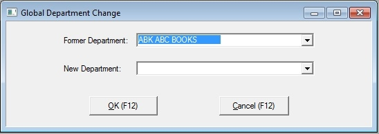
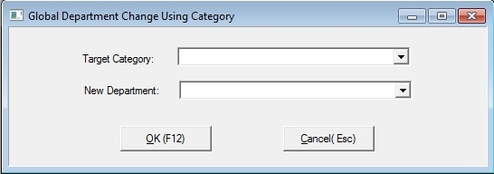

The Department Master is the section of Bookscan where all departments are stored.
The departments are shown in the diagram below are made up of a Code and Name.
Imprints being linked to a supplier is optional.
To open the Department Master window, on the main menu click Tables, then click Departments.

Adding a department
Click the Add button.
Enter the imprint Code, Name.
Then click OK button.
Edit a department
Click the Edit button.
Edit the Name field
Then click OK button.
Global
Titles
This will change the department the title is in.
Click the Global Title option.
Click the Global button.
Select the Former Department
Select the New Department.
Then click OK/Change button.

Category
Click the Global Category option.
Click the Global button.
Select the target Category.
Select the New Department.
Then click OK/Change button.
